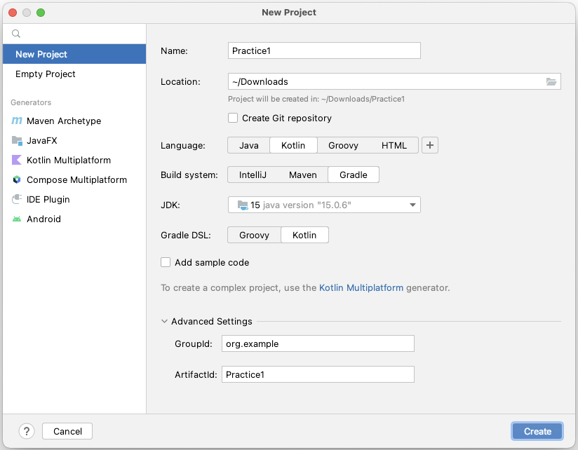
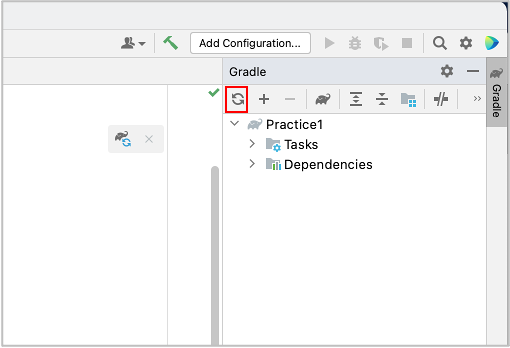

Creating project
Create new project
- Open IntelliJ IDEA, select
File > New > Project. - In New Project window, select
New Projecttab. - Input fields.
Name: Practice1Location: (Your location)Language: KotlinBuild system: GradleJDK: (Your choice)Gradle DSL: KotlinAdd sample code: OFF

- Click
Create. - Wait for a while until background tasks finish. It may take minutes.
build.gradle.kts (after created)
import org.jetbrains.kotlin.gradle.tasks.KotlinCompile
plugins {
kotlin("jvm") version "1.7.21"
}
group = "org.example"
version = "1.0-SNAPSHOT"
repositories {
mavenCentral()
}
dependencies {
testImplementation(kotlin("test"))
}
tasks.test {
useJUnitPlatform()
}
tasks.withType<KotlinCompile> {
kotlinOptions.jvmTarget = "1.8"
}
Append some lines to the file.
build.gradle.kts (after edit)
import org.jetbrains.kotlin.gradle.tasks.KotlinCompile
plugins {
kotlin("jvm") version "1.7.21"
}
group = "org.example"
version = "1.0-SNAPSHOT"
val shiratesCoreVersion = "3.1.2"
val appiumClientVersion = "8.1.0"
repositories {
mavenCentral()
}
dependencies {
testImplementation(kotlin("test"))
// JUnit 5
testImplementation("org.junit.jupiter:junit-jupiter-api:5.9.0")
testRuntimeOnly("org.junit.jupiter:junit-jupiter-engine:5.9.0")
// Appium
testImplementation("io.appium:java-client:$appiumClientVersion")
// shirates-core
testImplementation("io.github.ldi-github:shirates-core:$shiratesCoreVersion")
// https://mvnrepository.com/artifact/org.apache.logging.log4j/log4j-core
testImplementation("org.apache.logging.log4j:log4j-core:2.19.0")
// https://mvnrepository.com/artifact/org.slf4j/slf4j-nop
testImplementation("org.slf4j:slf4j-nop:2.0.5")
}
tasks.test {
useJUnitPlatform()
jvmArgs = listOf(
"--add-exports", "java.desktop/sun.awt.image=ALL-UNNAMED"
)
// Filter test methods
val envIncludeTestMatching = System.getenv("includeTestsMatching") ?: "*"
val list = envIncludeTestMatching.split(",").map { it.trim() }
filter {
for (item in list) {
println("includeTestMatching($item)")
includeTestsMatching(item)
}
}
}
tasks.withType<KotlinCompile> {
kotlinOptions.jvmTarget = "1.8"
}
Click reload on Gradle pane.
